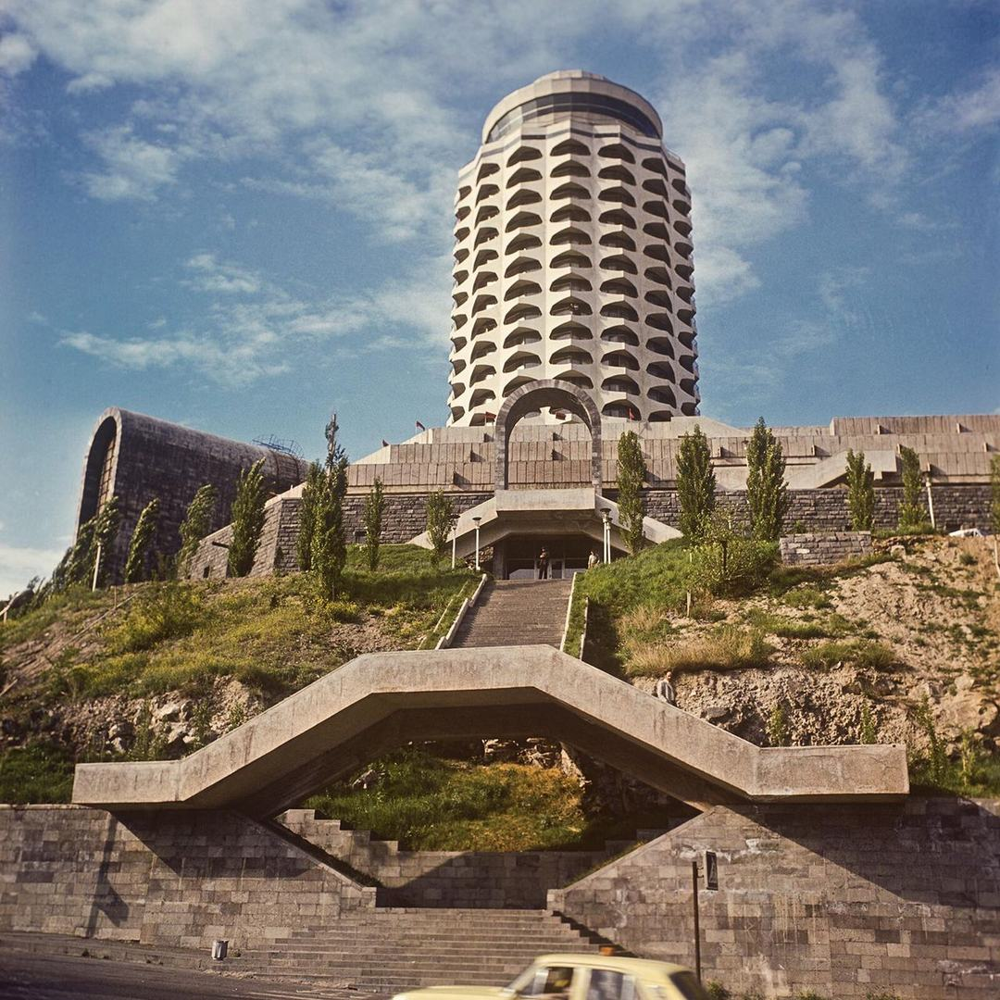
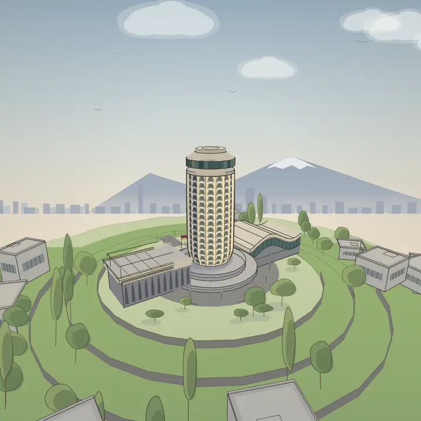

ԿուկուռուզնիկКукурузникThe Corncob
պտտվում է 360°-ով, փոխվում են օրվա ժամն ու լույսըкрутится на 360°, меняются время суток и светspins a full 360°, time of day and light change too

լուսանկարը՝фото:photo: Karen Demirchyan Museum / Wikimedia Commons, CC BY-SA 4.0 · կրճատված և սեղմվածобрезано и сжатоcropped and compressed
Երիտասարդական պալատ («Կուկուռուզնիկ»), Երևան։ Ճարտարապետներ՝ Ա. Թարխանյան, Ս. Խաչիկյան, Գ. Պողոսյան։Дом молодёжи («Кукурузник»), Ереван. Архитекторы: А. Тарханян, С. Хачикян, Г. Погосян.Youth Palace (“the Corncob”), Yerevan. Architects: A. Tarkhanyan, S. Khachikyan, G. Poghosyan.
Բացվել է 1979-ին, քանդվել՝ 2006-ին։Открыт в 1979, снесён в 2006.Opened in 1979, demolished in 2006.
Արխիվային լուսանկարը ↔ իմ 3D-նկարը․ քաշեք սահմանը՝ համեմատելու համար։Архивное фото ↔ мой 3D-рисунок — потяните границу, чтобы сравнить.Archival photo ↔ my 3D drawing — drag the line to compare.
ԱրխիվАрхивArchive
սահեցրու՝ մյուսները տեսնելու համար · աղբյուրը՝ լուսանկարը մեծացնելիսсвайп по фото · подпись и источник — при открытии фото крупноswipe through the photos · source shown when you open one
ԺամանակագրությունХроникаTimeline
- ՃարտարապետներАрхитекторыArchitectsԱ. Թարխանյան, Ս. Խաչիկյան, Գ. ՊողոսյանА. Тарханян, С. Хачикян, Г. ПогосянA. Tarkhanyan, S. Khachikyan, G. Poghosyan
- 1976–1977ՇինարարությունСтроительствоConstruction

վերակառուցումреконструкцияreconstruction - 1979Երիտասարդական պալատի բացումըОткрытие Дома молодёжиYouth Palace opens
- 2005Քաղաքապետարանի թիվ 40 որոշումը քանդման մասին, հոկտեմբերРазрешение мэрии №40 на снос, октябрьCity hall permit No. 40 for demolition, October
- 2006Շենքի քանդումը։ Պաշտոնական պատճառ՝ սեյսմակայունությունСнос здания. Формальная причина — сейсмостойкостьBuilding demolished. Official reason: seismic safety